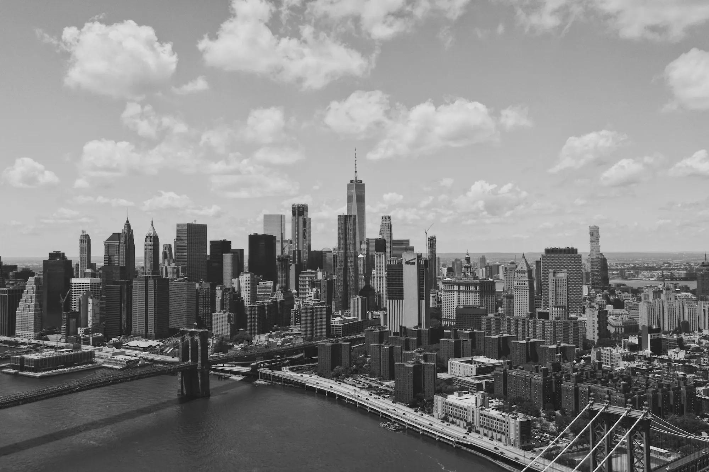

NEW
YORK
CITY
Dive into the hustle and bustle of lively streets, admire the iconic architecture of skyscrapers, and explore the vibrant neighborhoods that make this metropolis a one-of-a-kind place in the world.
THE BIG APPLE
Of all the metropolises in the world, none embodies the energy, diversity, and dynamism of urban life quite like New York City. Nicknamed the 'Big Apple', this iconic metropolis is a magnet for millions from all corners of the globe.
Beyond its imposing skyscrapers and hectic schedule, New York is a mosaic of stories, cultures, and influences that have woven together over the centuries to create a city unlike any other.
DEMOGRAPHY
New York, officially known as the City of New York, also referred to by names and abbreviations such as New York City or NYC, is the largest city in the United States in terms of population. It is home to a staggering 8 804 190 residents as of 2020.
8 MILLION
Residents
It is located in northeast of the country , on the Atlantic coast , at southeasten , tip of the state of New York. The City of NEW YORK consists of five borought
neighborhoods
CULTURE
New York has 113 square kilometers of green spaces and approximately 22 kilometers of public beaches. The city also boasts significant public parks, with the most famous being Central Park, the heart of the city and the most visited park in the country.
Tourism plays a significant role in the city of New York, offering hundreds of places to visit and entertain. The city attracts 40 million tourists annually. Among the most visited places in the city are Times Square, Wall Street, the Statue of Liberty, the Empire State Building, the Brooklyn Bridge, and Fifth Avenue
HISTORY
Founded by the Dutch in 1624, it has played a major role in American and world history.
Over the centuries, New York has witnessed numerous historical events, including the American Revolution, where it served as a crucial strategic stronghold for British and colonial forces. The 19th century witnessed the rapid growth of the city, propelled by immigration and industrialization, establishing it as a global center for trade and finance.
The impact of New York on culture, the economy, and the world at large is immense. It is the birthplace of artistic movements such as the New York School, jazz, and hip-hop. Broadway, the theater district, is renowned for its world-class shows. The city has influenced fashion, cuisine, and cinema on an international scale. Its role as a financial and commercial hub positions it among the major economic powers globally.
copy right®